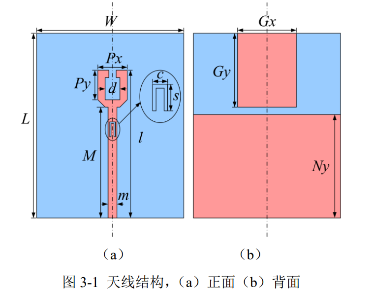
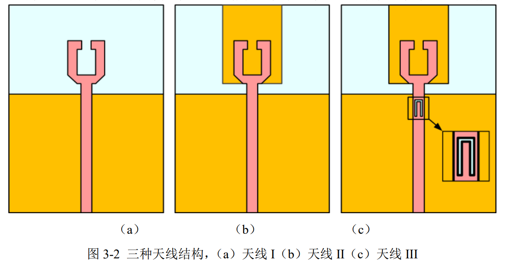
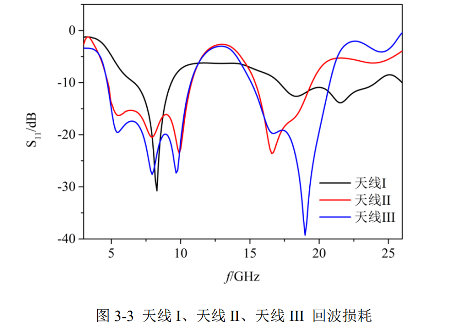
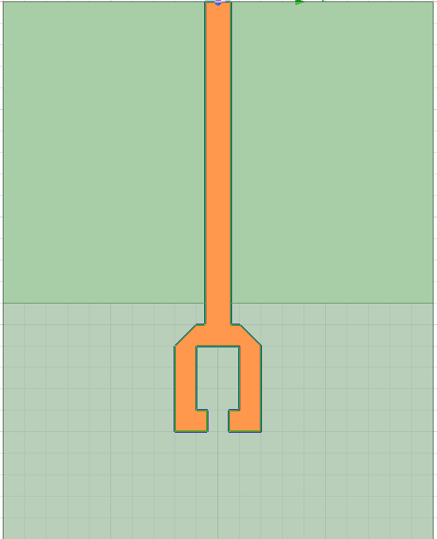
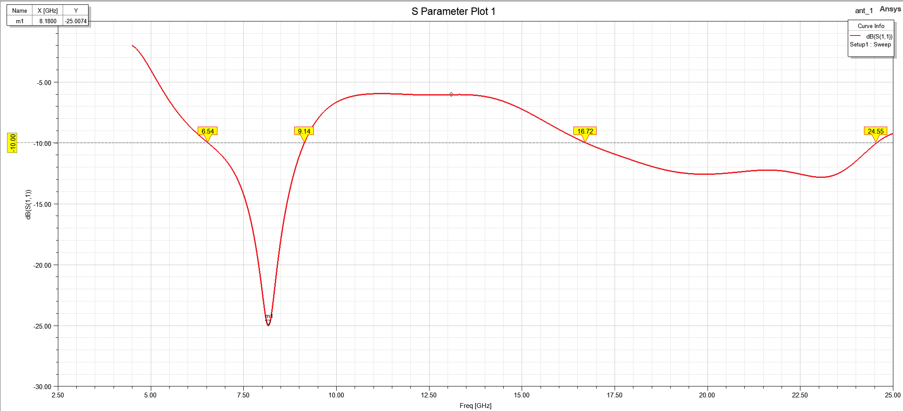
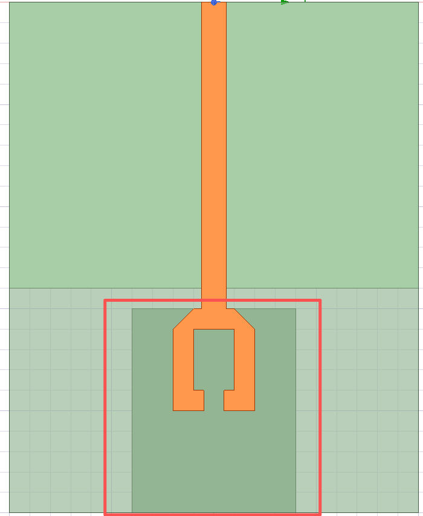
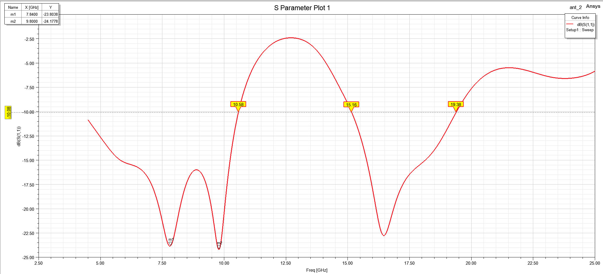
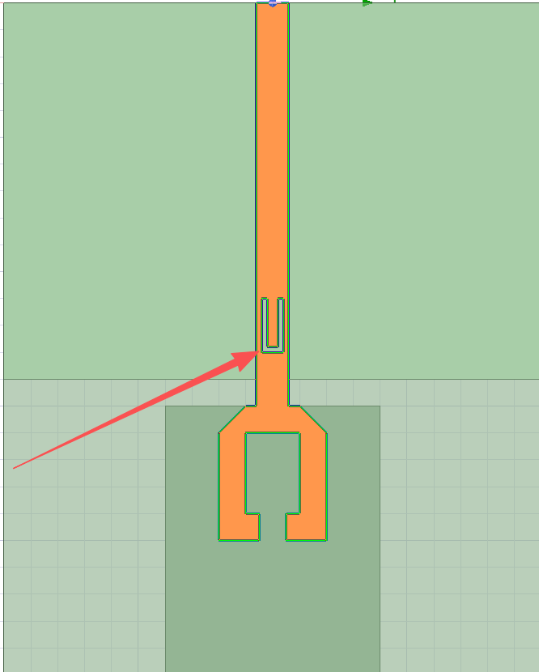
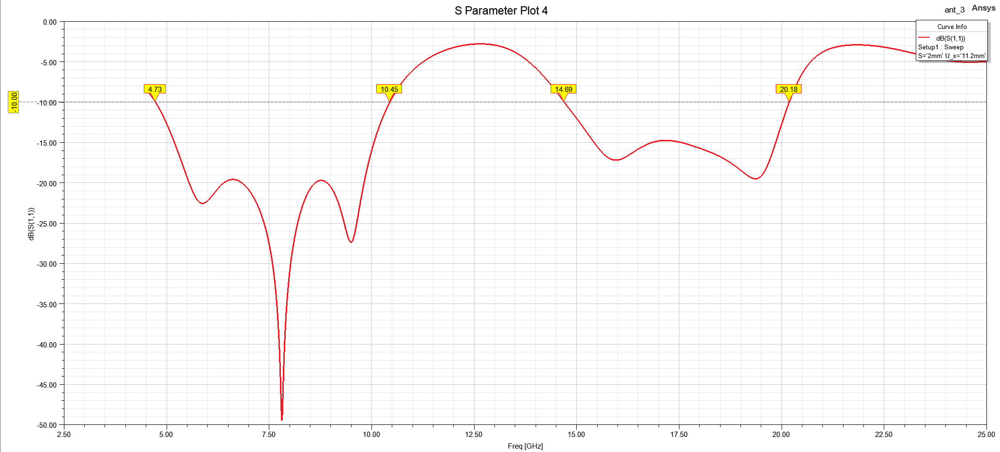

双工天线
Snail
单口双频段天线
小型化双频宽带天线设计



该模型是开口谐振环（SRR)加背面矩形寄生贴片加馈线U型槽的小型化双频宽带天线，整体采用微带线馈电，其双拼特性是由三级谐振结构叠加实现：
低频段：正面SRR开口谐振环主辐射+背面寄生贴片耦合增强
高频段：背面寄生贴片自身谐振+馈线U型槽谐振
演进1：开口谐振环 (SRR) 辐射单元（小型化 + 低频主辐射）
辐射机理：SRR的环形结构大幅延长了电流路径，物理尺寸近似为低频通带中心频率的四分之介质波长。电流沿着SRR的内外环边缘流动，开口处形成强电场辐射，等效于一个厍狄俄的四分之波长单极子天线。
工作模式：SRR 的基模谐振模式，实现了天线的小型化（比同频率普通矩形贴片尺寸减小约 40%）。
电流分布特征：6GHz 和 9GHz 时，电流主要集中在 SRR 的内外环边缘，馈线根部电流较弱。
复现结果


演进2：背面矩形寄生贴片（双频实现 + 低频带宽拓展）
辐射机理：悬浮在介质基板北面的矩形寄生贴片与正面SRR通过介质层形成电磁耦合，产生电容加载效应，进一步增长电长度，拓展低频带宽；同时寄生贴片自身作为独立写真单元，再高频产生一个谐振。
工作模式：低频段中，耦合谐振模式，与 SRR 的基模谐振叠加；高频段中，自身谐振模式
电流分布特性：低频中，寄生贴片上有明显的耦合电流；高频中，电流主要集中在寄生贴片上。
复现结果


演进3：馈线上的 U 型槽（高频带宽拓展）
辐射机理：U型槽再微带线馈线上引入串联容抗，与馈线自身的分布电感发生谐振，高频产生新的谐振点。该谐振频点与寄生贴片的高频谐振频点靠近，合并形成一个更宽的高频通带。
工作模式：槽线谐振模式，自身参与高频辐射。
电流分布特征：电流高度集中在 U 型槽的边缘，SRR 和寄生贴片上的电流较弱。
复现结果


总结
核心谐振点与结构的一一对应
| 谐振频段 | 核心产生结构 | 物理本质 | 电流分布特征 | 设计关键参数 |
|---|---|---|---|---|
| 低频主谐振 (5.8-11.0GHz) | 正面开口谐振环 (SRR) | 1/4 波长单极子谐振（环形结构延长电流路径） | 电流沿 SRR 内外环边缘流动，开口处电场最强 | SRR 单臂长度 PySRR 开口宽度 d |
| 高频第一谐振 (14.5-19.0GHz) | 背面矩形寄生贴片 | 寄生单元自身谐振（与主辐射单元电磁耦合馈电） | 电流主要集中在背面寄生贴片上，正面 SRR 电流较弱 | 寄生贴片宽度 Gx寄生贴片高度 Gy |
| 高频第二谐振 (19.0-21.5GHz) | 馈线上的 U 型槽 | 槽线谐振（容性槽与感性馈线串联谐振） | 电流高度集中在 U 型槽的边缘，其他区域电流很弱 | U 型槽深度 sU 型槽宽度 c |
双频天线的本质：在同一个物理空间内，让不同的金属结构在不同频率下成为主要的辐射体
耦合馈电的本质：不需要直接连接，通过电磁场的感应就能给寄生单元提供能量，让它也能辐射
馈线开槽的本质：在不增加天线尺寸的前提下，额外引入一个谐振模式，从而拓展带宽